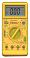
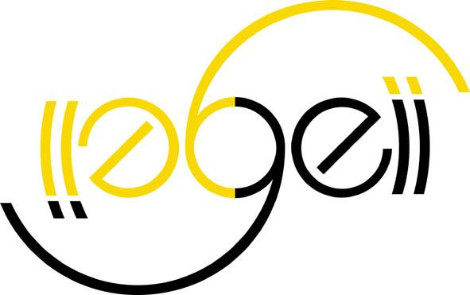

| "Sortie de l'iPhone 4 : 1G, 2G, 3G… ça veut dire quoi ?", à voir l'évolution des mobiles depuis leur apparition en 1985 à aujourd'hui | |
| "The evolution of the mobile phones" | |
| Pourquoi les enfants doivent apprender à coder ? | |
| Nous sommes les héros gaspilleurs des énergivores | |
| Rendez-nous le stylet | |
| "La programmation pour les enfants : et pourquoi pas le code en LV3 ?" | |
| L'informatique revient au lycée : 3 raisons d'enseigner le code | |
| La carte du Web | |
| Open soource : petits génies, gourous, traitres ... Six façons de réussir | |
| "Voiture
autonome : le problème, c'est l'homme", depuis le temps que je
le dis ... |
|
| Une page A4 pour déterminer facilement une fonction de transfert à partir des formes d'ondes des signaux en entrée et sortie |  |
| Un protocole de calcul de résistance équivalente pour un réseau de résistances | |
| Un protocole de mesure de 2 tensions à l'oscilloscope | |
| Une page d'exécutables compatibles Win et Linux : code couleurs, changement de bases, électronique de puissance, MCC, transfo, DSF, oscilloscope, générateur sur port COM | |
| Un petit exécutable de P. Durand pour se sensibiliser à l'incertitude des appareils de mesure |  |
| Simbot, un simulateur de robot suiveur de ligne, programmé avec A. Tauvel, pour aider les étudiants des IUT GEII à participer à la coupe de France de robotique |  |